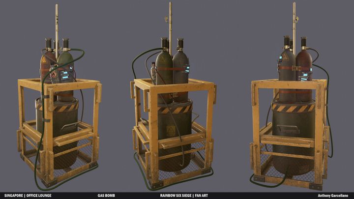
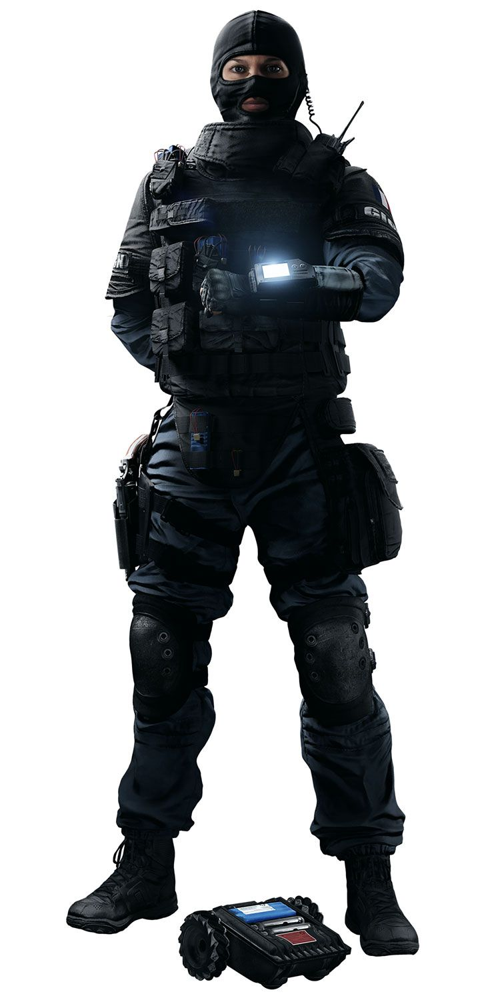

Rainbow Six Siege est une jeu vidéo compétitif, c'est un jeu de stratégie. Le jeu possède des manières différentes de jouer en fonction des agents sélectionnés lors des parties. De plus le jeu possède de nombreuses maps (cartes) où il est possible de jouer. Le principe du jeu est très simple à comprendre, il y'a d'un côté les attaquants et de l'autre les défenseurs.
Le premier mode de jeux c'est le Désamorçage de bombe : l'objectif est d'éliminer les adversaires ou de désamorcer l'une des deux bombes présentes sur le site. C'est le premier mode de jeu car, les deux autres modes de jeux sont moins joués car ils ne sont pas en compétition.
Le second mode de jeux c'est le mode Otage, il regroupe 2 catégories :
Extraction d'otage : l'objectif est d'extraire l'otage du bâtiment vers une zone sécurisée se trouvant à l'extérieur.
Protection d'otage : l'objectif est d'éliminer les adversaires tentant de garder l'otage en leur possession.
Le dernier mode de jeux c'est la Sécurisation de zone : l'objectif est d'éliminer les adversaires ou de sécuriser une zone en se trouvant proche d'un conteneur radioactif pendant un certain temps sans qu’aucun adversaire ne soit dans cette même zone. Plus le nombre de joueurs présents dans la zone est important, plus le temps de la sécurisation est rapide.
Voici une image de la bombe dans Rainbow Six Siege :
Rainbow Six Siege regroupe différent personnage, ils viennent tous d'une unité spéciale différente. Nous retrouvons les unités spéciales les plus connues sur la terre. Les unités spéciales proviennent de plusieurs pays, par exemple : la France, l'Espagne, la Chine, les Etats-Unis, le Japon, le Brésil, l'Allemagne, la Pologne, la Russie, le Canada, l'Angleterre et plein d'autres.
Il y'a le GIGN, le FBI, le GSG 9, le JTF-2, les Navy Seals, le SAS, la Delta Force, le TGS, le G.I.S, le 707th SMB, le BOPE, le GEO, le GIGR, le GROM, le SAT, le SDU, les Spetsnaz,
le SASR, le Jaegerkorpset, l'APCA, le FES, le Nighthaven, le REU et pour finir le Inkaba Task Force.
Les unités principales sont le GIGN, le FBI, le SAS, le GSG 9 et les Spetsnaz. Ce sont les principales car ces 5 unités sont présente depuis le début du jeu. Je vais vous décrire les personnages
qui sont dans ces unités, je vais vous décrire aussi leur capacités, leur postes et leur caractéristiques. Sachant que tous les personnages ont des capacités différentes et des
caractéristiques différentes.
Je vais vous présenter les personnages du GIGN, il faut savoir que le GIGN est une unité spéciale française.
Le GIGN, regroupe 5 personnages. Il y'a Doc, Montagne, Twitch, Rook et Lion.
Doc : Il possède un pistolet Stim MPD-0 (pistolet qui ranimera instantanément et à distance un allié lui redonnant un certain nombre de point de vie. Doc peut également l'utiliser pour redonner de la vie à ses coéquipiers encore en vie ou à lui-même. Attention si la santé redonnée dépasse 100, elle baissera peu à peu au fil du temps pour revenir à 100.
Rook : Il possède des protections R1N "Rhino". Rook pose un stock de protections (il y en a 5) qui font que la personne possèdant une protection ne peut pas mourrir sans être d'abord mis au sol (sauf headshot). Un mix Doc/Rook peut donc être une stratégie.
Montagne : Il possède un bouclier extensible "Le Roc", une fois déployé "Le Roc" protège Montagne de toute sa hauteur et dépasse sur les côtés, lui permettant de protéger efficacement ses alliés derrière lui par exemple. Il ne peut tirer que lorsque son bouclier n'est pas déployé. Ce bouclier lui permet aussi de pouvoir avancer sans ses coéquipiers pour pouvoir contrôler les différentes salles des maps.
Twitch : Ce personnages possède un drone à électrocution "RSD Model 1", ce drone permet d'envoyer des décharges électriques pour détruire les gadgets de défense et faire des dégats aux ennemis. Il possède 2 drones, cependant sur les ennemis les décharges électriques font très peut de dégats. Après chaque décharges électriques le drone doit se recharger, après chaque cooldown.
Lion : Il possède un drone de surveillance "EE-One-D". Lorsque Lion active sa capacité, ça ne passe pas inaperçu : les défenseurs ne doivent plus bouger pendant un certain temps sous peine d'être précisément localisé à travers les murs. Les défenseurs sont prévenus un très court instant en avance pour leur indiquer que lion a activé sa capacité.
Je vais vous présenter les personnages du FBI, il faut savoir que le FBI est une unité spéciale amériquaine. Le Federal Bureau of Investigation, ou très couramment nommé par son sigle FBI, est, aux États-Unis,
le principal service fédéral de police judiciaire et un service de renseignement intérieur.
Le FBI, regroupe 4 personnages. Il y'a Ash, Thermite, Castle et Pulse.

Castle : Il possède des panneaux tactique universel UTP1. Ce sont des barricades qui se placent sur des portes et des fenêtres, elles sont pare balles. Pour les casser il faut plus d'une dizaine de coups de crosse ou la faire exploser avec des explosifs. Cette barricade est très utile pour faire des stratégies et étendre le site de défense sur plusieurs pièces.
Pulse : Ce personnage atypique possède un capteur cardiaque HB-5. Ce capteur cardiaque indique la position d'un ou plusieurs ennemis à travers les murs quand ils sont pointés avec ce gadget. Le capteur détecte les ennemis que à une certaine distance.
Thermite : Il possède des charges exothermiques "BRIMSTONE BC-3". Il en possède deux elles permettent de faire une grande ouverture dans les murs renforcés. Malgrés tout, ses charges exothermiques sont contrable assez facilement, si les défenseurs possèdent un personnage appelé "bandit". Si bandit pose ses dispositifs électrique, thermite ne pourras pas poser ses charges exothermiques.
Ash : Elle possède un M120 CREM (Compact Rifle Entry Munition). C'est un lance-roquettes qui se nomme "Constrictor". Le lance-roquettes possède deux munitions pour détruire à distance les surfaces destrutibles non-renforcées.
Je vais vous présenter les personnages du SAS, il faut savoir que le SAS est une unité spéciale anglaise.
Le SAS, regroupe 4 personnages. Il y'a Sledge, Thatcher, Smoke et Mute.
Mute : Ce personnage possède des brouilleurs de signaux GC90 "Moni". Ils désactivent les drones, les explosifs, les plombs X-KAIROS, les charges exothermiques etc. Ces objets sont désactivé que si ils sont dans le raillon des brouilleurs de signaux.
Smoke : Ce personnage possède des grenades à composés "Z8". Il en possède 3, ces grenades dès qu'elles sont activées elles expulsent un gaz toxique. Les autres personnages ne peuvent pas passer dans ce nuage du gaz, sinon ils prendront des dégats à cause du gaz. Ce personnage est très utile, il permet de temporiser pendant les dernières secondes du round.
Sledge : Il possède une masse tactique appelée "Le Tronc". Elle permet de cassé des murs non renforcés, des barricades, le sol et toutes autres surfaces cassable. Ce personne peut être très utile, pour casser le sol et avoir l'avantage sur l'ennemi grâce à la hauteur.
Thatcher : Il possède une grenade IEM "EG Mk0". Cette grenade désactive tout les objets eléctronique dans un certain rayon. Ce personnage est très utile, généralement il va avec la personne qui joue thermite, car si il y'a des brouilleurs de signaux sur les murs renforcés, thermite ne pourra pas casser le mur, donc thatcher lance sa grenade IEM pour désactivé les brouilleurs.
Je vais vous présenter les personnages du GSG 9, il faut savoir que le GSG 9 est une unité spéciale allemande.
Le GSG 9, regroupe 4 personnages. Il y'a IQ, Blitz, Bandit et Jäger.
Bandit : Il possède des dispositifs électrique rustique "CED-1". Ce dispositif permet d'électrifier un fil barbelé, un bouclier, un mur renforcé ou une trappe renforcé. Des stratégies existent avec ce personnage par exemple le bandit trick pour contrer les opérateurs comme Thermite. Le bandit trick est une technique pour pas qu'un mur renforcé soit cassé, le bandit pose sont dispositif électrique lorsque thermite pose des charges exothermiques sur le mur, meme avec un thatcher dans sont équipe le bandit trick est très compliqué à contrer.
Jäger : Ce personnage possède des dispositifs anti-grenade "ADS-MK IV Magpie". Comme dit précédemment ce sont des dispositifs anti-grenades, ils absorbent les grenades et les projectiles lancés. Ce personnage est très très important, car sans ses dispositifs posé sur le site de défense, les défenseurs devront esquiver toutes les grenades.
Blitz : Il possède un bouclier tactique "G52". Ce bouclier a une particularité, cette particularité c'est que ce bouclier fait l'effet d'une grenade flash à condition d'être assez près de la cible. Il possède des recharges de flash sur sont bouclier, cela permet d'avancer vite dans la map et d'avoir l'avantage sur les ennemis.
IQ : Elle possède un DSE MKIII "Spectre". C'est un dispositif qui détecte les appareils électriques à travers les murs. Il détecte aussi le crâne de Pulse lorsque il utilise son capteur cardiaque pour repérer les ennemis. Avec le dispositif d'IQ, elle peut savoir de quel type est l'objet.
Je vais vous présenter les personnages de l'unité des Spetsnaz, il faut savoir que les Spetnsaz sont une unité spéciale russe. Le terme générique Spetsnaz désigne de multiples groupes d'intervention spéciaux de la police, des ministères de la Justice et
des Affaires intérieures russes, du FSB et du SVR ainsi que de l'armée russe.
Les Spetnsaz, regroupe 5 personnages. Il y'a Fuze, Glaz, Finka, Kapkan et Tachanka.
Kapkan : Il possède des dispositifs explosifs à laser rouge "EDD MK II". Les laser sont invisible mais par contre, le dispositif est visible. Il se place sur des portes et des fenêtres. Il peut se placer à 3 endroits sur les portes, en haut, au milieu ou en bas. Dès qu'un ennemi traverse ce dispositif, le dispositif explose et fait des dégats a l'ennemi.
Tachanka : Ce personnage possédait avant sont rework, une mitrailleuse "RP-46 Degtyaryov". C'était une tourelle qui pouvait se placer sur des sols, si elle était bien utilisée elle faisait très mal à l'ennemi. Après le rework, le lance grenade incendiaire "Shumikha" à été rajouté à sont équipement. Sa mitrailleuse qui était la tourelle anciennement a été modifiée et elle est passée en arme principale
Fuze : Fuze possède des charges explosives APM-6 "Matryoshka". Elles se placent sur un sol, un toit, un mur, une porte ou une fenêtre, pour autant que la surface soit cassable. Cette charge peut également être placée sur une barricade renforcée du personnage Castle. Lorsque Fuze active sa charge, elle lance des petits projectiles ressemblant à des palets de hockey sur glace. Ces projectiles font des dégats aux ennemis mais aussi aux alliés si ils sont dans le rayon des projectiles.
Glaz : Ce personnage possède un fusil de sniper "Visée auxiliaire HDS". Le viseur de ce fusil sniper, possède un viseur thermique. Il permet a Glaz de voir les ennemis en jaune à travers des grenades fumigènes et des petits trou dans les murs.
Finka : Elle possède un injecteur de nanobots. Ce gadget lui permet de redonner de la vie à ses alliers.